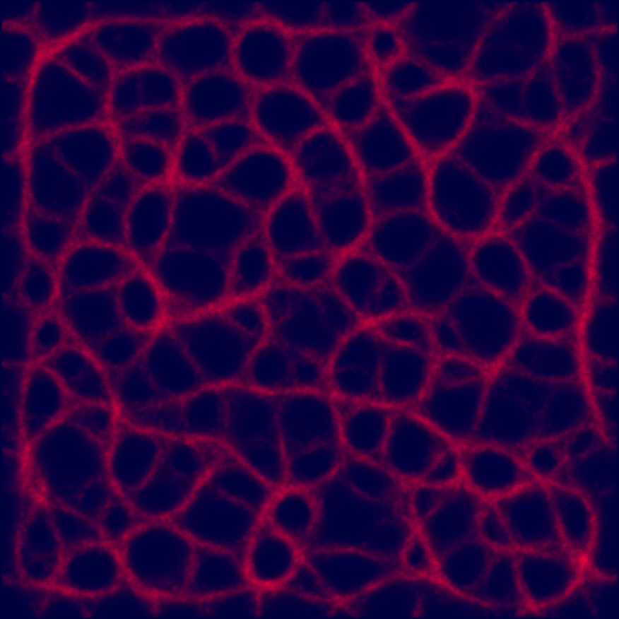

A generative digital art piece based on a multi-agent simulation of the slime mould, Physarum Polycephalum. 
The model for the same is an extended version of the one used as part of the Bio-inspired Networks project.
In this, the mouse controls the deposition of an attractor that causes the vein-like structures to rearrange themselves. The nature of the simulation makes any such change a temporary one, as the overall network moves back to an efficient state in a short time. The sound is controlled by the location of the attractor deposition. Currently, with the aim of converting this into a live installation, the application also has a test feature wherein the webcam is allowed to detect light sources, based on which attractors are sprinkled at certain locations. Sample videos of a render and live demos can be found below -
(brief render)
(live demo)